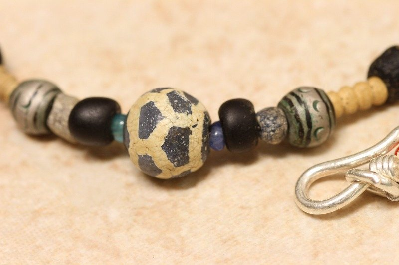

アンティークビーズ ／ とんぼ玉
紀元1世紀から現代に
時を超えて
地中海のローマンガラス、ヴェネチアのシェブロン、チベットのDzi beads。産地と時代のはっきりしたビーズだけを選び、一連のネックレスに仕立てました。同じものは二つとありません。
コレクション全90点を見る
700年頃Dzi beads ネックレス


← 古い順にならべています →
年代からさがす
全90点

いま並んでいるもの
すべて見る 1世紀頃
BC4世紀 (戦国玉 アイビーズ ネックレス) アンティークビーズ とんぼ玉
¥73,619税込
1世紀頃
BC4世紀 (戦国玉 アイビーズ ネックレス) アンティークビーズ とんぼ玉
¥73,619税込
 300年頃
古代～中世 モザイク玉 イスラム玉 ネックレス アンティークビーズ とんぼ玉
¥63,953税込
300年頃
古代～中世 モザイク玉 イスラム玉 ネックレス アンティークビーズ とんぼ玉
¥63,953税込
 1世紀頃
古代ファイアンスと古代トルコ石 ネックレス アンティークビーズ とんぼ玉
¥48,379税込
1世紀頃
古代ファイアンスと古代トルコ石 ネックレス アンティークビーズ とんぼ玉
¥48,379税込
 1世紀頃
絶品 ローマングラス ネックレス アンティークビーズ とんぼ玉
¥41,352税込
1世紀頃
絶品 ローマングラス ネックレス アンティークビーズ とんぼ玉
¥41,352税込
 100年頃
美品！ターコイズブルー古代ローマングラス ネックレス アンティークビーズ とんぼ玉
¥40,231税込
100年頃
美品！ターコイズブルー古代ローマングラス ネックレス アンティークビーズ とんぼ玉
¥40,231税込
 500年頃
アフガニスタン出土 橙イスラム玉 ネックレス アンティークビーズ とんぼ玉
¥39,702税込
500年頃
アフガニスタン出土 橙イスラム玉 ネックレス アンティークビーズ とんぼ玉
¥39,702税込
 300年頃
3世紀 (ジェンネ ブルーアイビーズ ネックレス) アンティークビーズ とんぼ玉
¥37,176税込
300年頃
3世紀 (ジェンネ ブルーアイビーズ ネックレス) アンティークビーズ とんぼ玉
¥37,176税込
 900年頃
10世紀 イスラム玉（ジュンネ出土イスラムモザイク貼付玉） ネックレス とんぼ玉
¥36,901税込
900年頃
10世紀 イスラム玉（ジュンネ出土イスラムモザイク貼付玉） ネックレス とんぼ玉
¥36,901税込
いちばん古いのは1世紀頃のもの。
いちばん新しいのは2013年代。
その間に、ガラスの作り方が何度も変わりました。
産地からさがす


 もうひとつの仕事
農業ドローン散布。
もうひとつの仕事
農業ドローン散布。点検事業は株式会社KENZAKI DRへ。 ドローン事業と法人化のお知らせ →